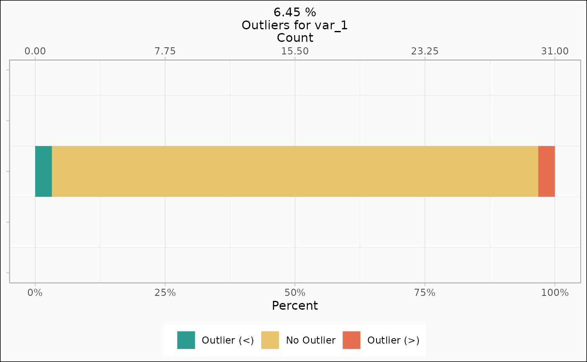
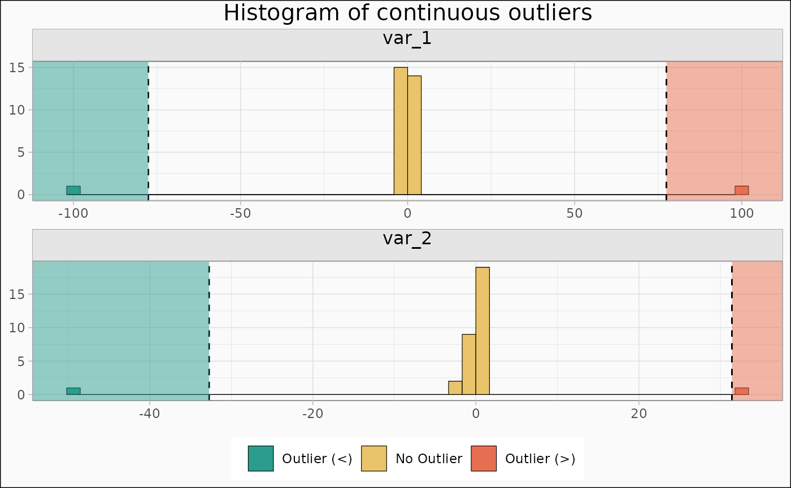
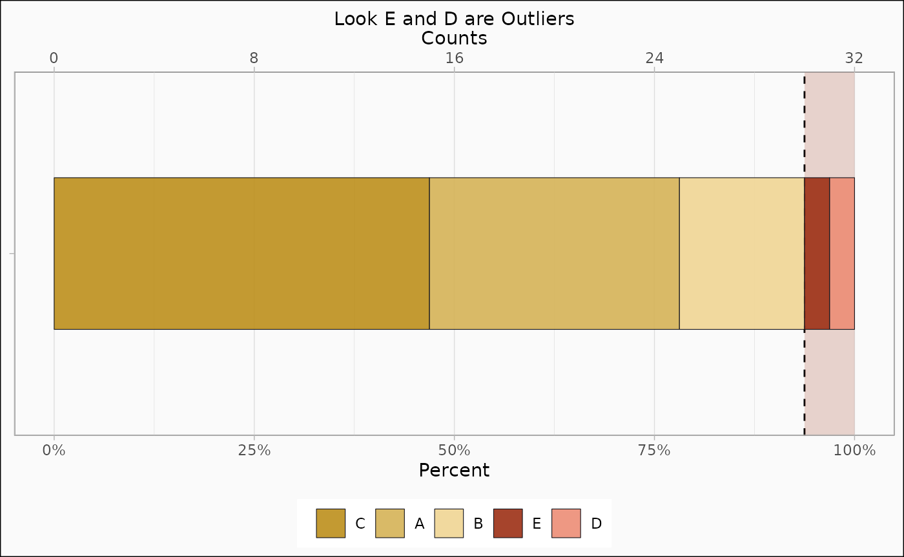

Basic Identification and Visualisation of Outliers
Source:vignettes/basic_useage.Rmd
basic_useage.RmdData creation
First, we’re going to load the package and create some outliers in the ‘mtcars’ dataset. Two continuous variables (one with NA´s), one logical and one factor level.
library(outlieR)
set.seed(123)
mtcars["var_1"] <- c(rnorm(29), -100, 100, NA)
set.seed(234)
mtcars["var_2"] <- c(-50, 32, rnorm(30))
mtcars["var_3"] <- c(rep(TRUE, 31), FALSE)
mtcars["var_4"] <- factor(rep(LETTERS[1:5], times = c(10, 5, 15, 1, 1)))
# For better printing.
mtcars <- tibble::as_tibble(mtcars)Identification of Outliers
The ‘identify_outlier()’ function is used to identify outliers based on methods and parameters spesificed in ‘control_outlier()’ function. This control function is optional to use.
outlier_mtcars <-
identify_outlier(mtcars,
var_1, var_2, var_3, var_4,
control = control_outlier(discrete_method = "prop", prop = 0.06, na_action = "keep")
)
print(outlier_mtcars)
#> ── 5 Outliers were removed of 32 rows. ─────────────────────────────────────────To get a summary of the results.
summary(outlier_mtcars)
#> ┌─────────────────────────────────────────┐
#> │ │
#> │ 5 Outliers were removed of 32 rows. │
#> │ │
#> └─────────────────────────────────────────┘
#>
#> ── Summary Table of outliers ───────────────────────────────────────────────────
#>
#>
#> |Variable |Variable Type |Outlier Exist? | N Outliers|% Outlier | N of NAs|
#> |:--------|:-------------|:--------------|----------:|:---------|--------:|
#> |var_1 |dbl |Yes | 2|6.5 % | 1|
#> |var_2 |dbl |Yes | 2|6.2 % | 0|
#> |var_3 |lgl |Yes | 1|3.1 % | 0|
#> |var_4 |fct |Yes | 2|6.2 % | 0|Filtering
To remove rows in the data with outliers identified in the previous step - call ‘filter_outlier()’ on the outlier object.
filtred_mtcars <- filter_outlier(outlier_mtcars)
pillar::glimpse(filtred_mtcars)
#> Rows: 27
#> Columns: 15
#> $ mpg <dbl> 22.8, 21.4, 18.7, 18.1, 14.3, 24.4, 22.8, 19.2, 17.8, 16.4, 17.3…
#> $ cyl <dbl> 4, 6, 8, 6, 8, 4, 4, 6, 6, 8, 8, 8, 8, 8, 8, 4, 4, 4, 4, 8, 8, 8…
#> $ disp <dbl> 108.0, 258.0, 360.0, 225.0, 360.0, 146.7, 140.8, 167.6, 167.6, 2…
#> $ hp <dbl> 93, 110, 175, 105, 245, 62, 95, 123, 123, 180, 180, 180, 205, 21…
#> $ drat <dbl> 3.85, 3.08, 3.15, 2.76, 3.21, 3.69, 3.92, 3.92, 3.92, 3.07, 3.07…
#> $ wt <dbl> 2.320, 3.215, 3.440, 3.460, 3.570, 3.190, 3.150, 3.440, 3.440, 4…
#> $ qsec <dbl> 18.61, 19.44, 17.02, 20.22, 15.84, 20.00, 22.90, 18.30, 18.90, 1…
#> $ vs <dbl> 1, 1, 0, 1, 0, 1, 1, 1, 1, 0, 0, 0, 0, 0, 0, 1, 1, 1, 1, 0, 0, 0…
#> $ am <dbl> 1, 0, 0, 0, 0, 0, 0, 0, 0, 0, 0, 0, 0, 0, 0, 1, 1, 1, 0, 0, 0, 0…
#> $ gear <dbl> 4, 3, 3, 3, 3, 4, 4, 4, 4, 3, 3, 3, 3, 3, 3, 4, 4, 4, 3, 3, 3, 3…
#> $ carb <dbl> 1, 1, 2, 1, 4, 2, 2, 4, 4, 3, 3, 3, 4, 4, 4, 1, 2, 1, 1, 2, 2, 4…
#> $ var_1 <dbl> 1.55870831, 0.07050839, 0.12928774, 1.71506499, 0.46091621, -1.2…
#> $ var_2 <dbl> 0.66076974, -2.05298300, -1.49920605, 1.47123312, 1.45913853, 0.…
#> $ var_3 <lgl> TRUE, TRUE, TRUE, TRUE, TRUE, TRUE, TRUE, TRUE, TRUE, TRUE, TRUE…
#> $ var_4 <fct> A, A, A, A, A, A, A, A, B, B, B, B, B, C, C, C, C, C, C, C, C, C…Visualisation
First continuous
# type = "histogram" is the default
identify_outlier(mtcars, var_1) |>
autoplot()
identify_outlier(mtcars, var_1) |>
autoplot(type = "count")
Also multiple (not all combinations are supported yet)
identify_outlier(mtcars, var_1, var_2) |>
autoplot(type = "hist")
identify_outlier(mtcars, var_1, var_2, var_3) |>
autoplot(type = "count")Autoplot returns a ggplot, so its customisable with ggplot2s functions.
identify_outlier(mtcars, var_4) |>
autoplot(type = "count") + ggplot2::ggtitle("Look E and D are Outliers")